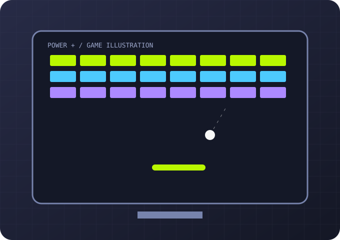
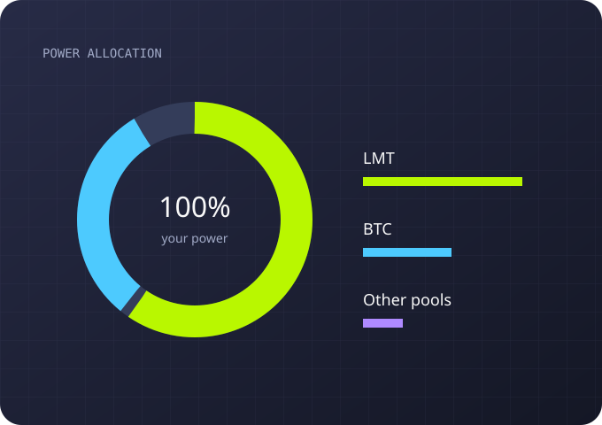
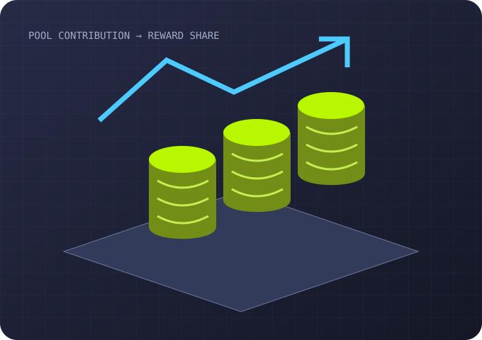
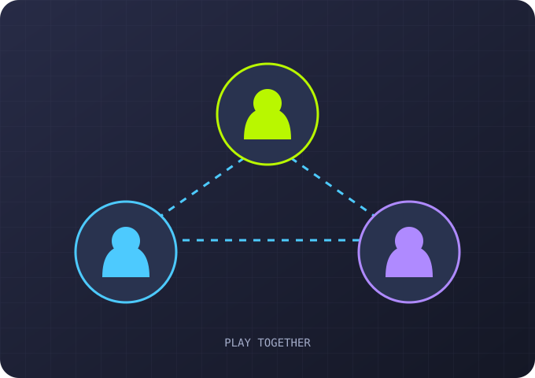

Mining Blocks
Grow without cash deposits
Build a farm with what you earn in the game: complete tasks, craft miners and accumulate bonuses. Real-money balance top-ups are not available here.
Mining Blocks guide
YOUR STRATEGY — YOUR PROGRESS
Limercoin combines virtual equipment, mini-games and power management. This guide introduces the main mechanics before you enter the game.
Explore the game
01 / YOUR BASE
Start with your room: place racks, add miners and arrange a practical setup. Equipment provides the permanent part of your in-game power.
Plan your layout: miners need free slots in racks.
Open your spaceYour virtual room is the foundation of your setup. Check your available space first, then choose compatible racks and equipment.
02 / EQUIPMENT
The in-game market offers miners with different power, size, rarity and collection attributes. Compare them before choosing. Crafting produces a level-one miner. To raise its level, open the Merge Center: a recipe combines two eligible miners and requires parts and in-game currency. The catalogue includes upgrade paths up to L6; check the requirements and result preview before merging.
Racks hold your miners. Consider their capacity and the available room space.
Visit the marketCompare power with the space a miner occupies. Rarity and collection describe an item, but do not replace checking its stats.

03 / MINI-GAMES
Mini-games provide extra power for a limited time. It adds to your equipment power and increases your contribution to the pools you choose.
Watch the bonus duration: game power expires over time.
Open gamesBonus power is time-limited. Check its status in your profile and account for it when planning your allocation.

04 / MANAGEMENT
Choose what share of your total power goes to each available cryptocurrency pool. Your allocation determines which rewards you participate in.
The illustration explains the allocation principle. Check the game for available pools and current terms.
Manage powerReview your allocation when your goals change. This page does not connect to your account or change any game settings.

05 / REWARDS
Each pool combines its participants' power. Under the mechanics described on the project website, your reward share depends on your share of the pool's power: equipment and temporary bonuses affect that contribution.
This is a game simulator. Illustrations are not earnings calculations; check the service for current reward and withdrawal rules.
Visit LimercoinYour pool share also depends on other participants' power. The same personal power therefore does not guarantee a fixed reward.

06 / BETTER TOGETHER
Limercoin has a referral programme. Invite friends and explore the available bonuses; their terms are published by the service.
The buttons in this guide include the referral ID ryxpgvt3.
Explore in the gameThe referral link opens the official website. Registration, programme terms and available rewards are handled by Limercoin.
YOUR NEXT STEP
Enter the Universe